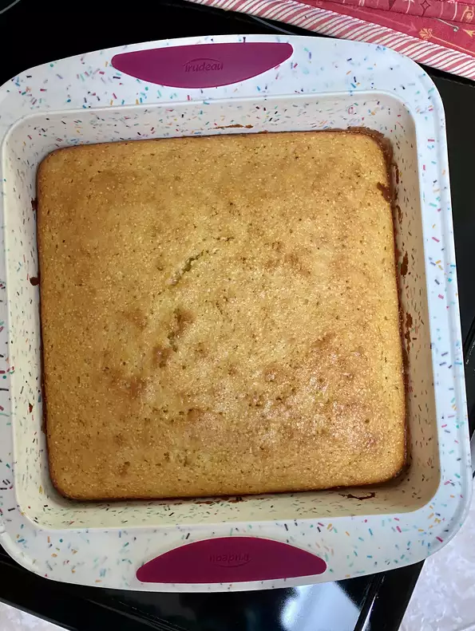

Grandmas Cornbread

Taste so good, make you wanna slap yo Grandma!
Nutrition Info
- Prep: 15 mins
- Cook: 30 mins
- Total: 45 mins
- Servings: 9
- Yield: 1-8x8 inch pan
Per Serving: 284 calories; protein 4.8g; carbohydrates 39.1g; fat 12.2g;
cholesterol 59mg; sodium 317.8mg.
Ingredients:
- ½ cup butter
- ⅔ cup white sugar
- 2 large eggs
- 1 cup buttermilk
- ½ teaspoon baking soda
- 1 cup cornmeal
- 1 cup all-purpose flour
- ¼ teaspoon salt
Steps:
- Preheat the oven to 375 degrees F (175 degrees C). Grease an 8-inch \
square pan.
- Melt butter in a large skillet over medium heat. Remove from heat and
stir in sugar. Quickly whisk in eggs.
- Combine buttermilk and baking soda in a small bowl; whisk mixture into
the skillet. Stir in cornmeal, flour, and salt until well-blended and
only a few lumps remain. Pour batter into the prepared pan.
- Bake in the preheated oven until a toothpick inserted in the center
comes out clean, 30 to 40 minutes.